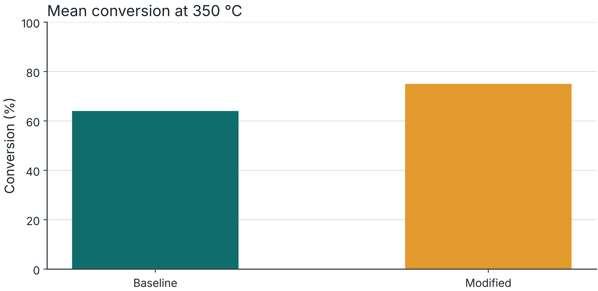
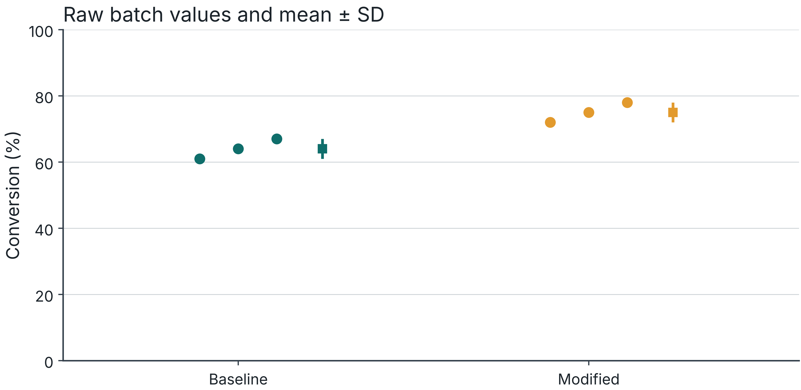
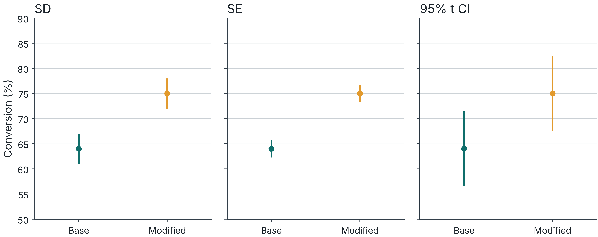
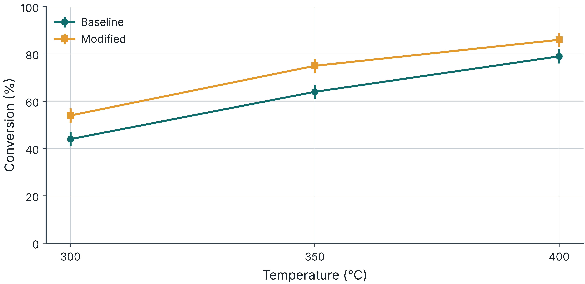
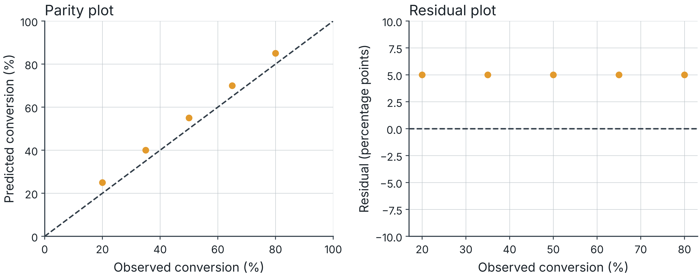

A figure that supports a precise claim
Temperature dependence: a response plot
Independent variation: raw points with a summary
Prediction quality: parity and residual plots
Exact conditions or values: a table

Intentionally incomplete teaching example. Synthetic data.

Synthetic conversion data at 350 °C. Points: independent batches. Summary: mean ± sample SD.

Synthetic data. 95% t intervals assume independent, approximately normal observations. n = 3 per group.

Synthetic data. Mean ± SD, n = 3 independent batches per catalyst at each temperature. Lines guide the eye.
| Metric at 350 °C | Baseline | Modified |
|---|---|---|
| Conversion (%) | 64 | 75 |
| Selectivity to P (%) | 89 | 87 |
| Mean yield to P (%) | 57.0 | 65.2 |
Synthetic paired run data. Yield = conversion × selectivity / 100 for the stated 1:1 molar basis.

Synthetic model predictions. Residual = predicted − observed conversion. Dashed lines show equality and zero.
Conversion at 350 °C for baseline and modified catalysts under matched feed and flow conditions.
Points show three independent catalyst batches per condition. Large markers show means. Error bars show ±1 SD.
The comparison covers one feed composition. The experiment does not establish a reaction mechanism.
Synthetic teaching data. Report the remaining operating conditions in the final caption or linked methods.
What system and comparison does the figure show?
Which conditions, units and normalization apply?
What is n, and what counts as an independent replicate?
What do points, lines and uncertainty marks mean?
Pairs, 10 minutes. Use Worksheet 2A.
Choose a scientific claim and a suitable display.
Sketch the axes, units, raw observations and uncertainty.
Write a caption and identify one unsupported interpretation.
Put units in the headers.
Use precision that the measurement supports.
Distinguish missing, not measured and not applicable.
Keep each row’s basis of comparison explicit.
Keep raw data unchanged and document exclusions.
Generate the figure from a saved script.
Use consistent scales for panels meant for comparison.
Retain source files, processing steps and permissions.
Can you identify the claim within 20 seconds?
Can you reconstruct the comparison from the caption?
Does the display show variation and limitations?
What would you ask the author to change?
Design A: one catalyst batch, measured nine times.
Design B: three independently prepared batches, each measured three times.
For between-batch variation, Design B has n = 3 independent batches.
Check the figure at its intended publication size.
Use the lab palette and redundant markers or labels.
Export vector files or raster files at ≥600 dpi.
Check embedded PDF fonts and exclude Type 3 fonts.
seminar3-cheme-feedback.soorathep-k.chatgpt.site/session/2
Exit ticket: student ID optional. Feedback: no name or student ID.
Krzywinski and Altman: Error bars
I&EC Research: Author Guidelines